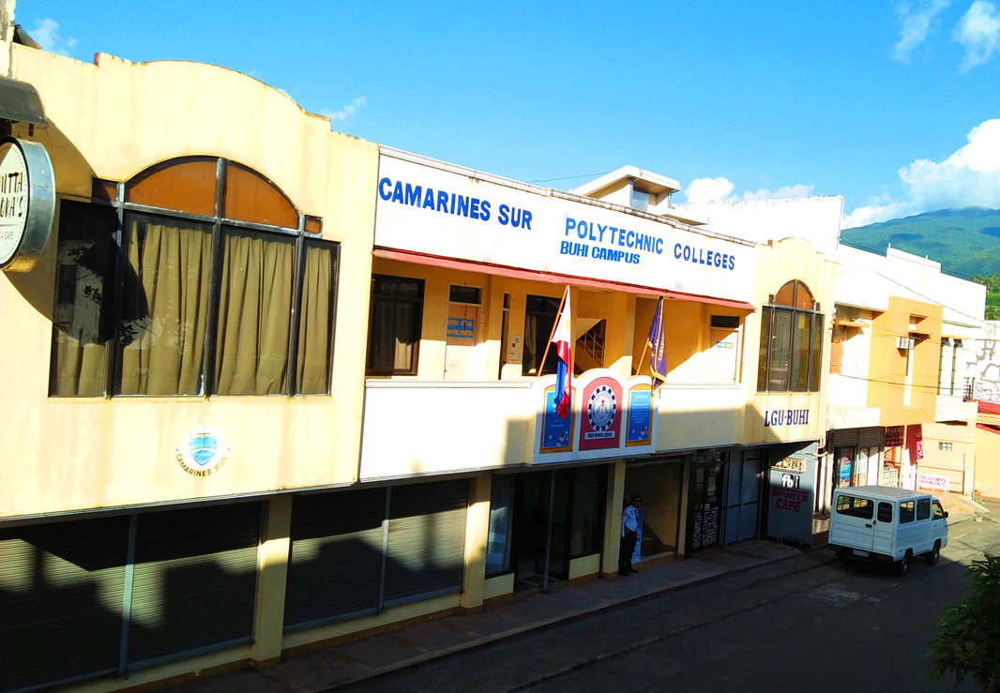

TIME REVEALS THE TRUTH
THE OFFICIAL STUDENT-COMMUNITY PUBLICATION OF CAMARINES SUR POLYTECHNIC COLLEGES - BUHI CAMPUS
CSPC Buhi Campus Marks its 12th Year Service to Community
MARIBER M. VILLAR

CSPC-BC commemorates its 12th year of service to the community – February 27, 2020, at Buhi Millenium Center with the theme “Valuing the past… Strengthening Relationships… Transforming the future” The celebration educes the commence of the institution to pay tribute and gratitude to the people behind its success and feat. The celebration caters to various activities for students, staff and community, highlighting the various interests of the group.
as part of the celebration, students of CSPC–BC partakes the seminar on Work attitudes and Values Enhancement with Socialization facilitated by Dr. April Z. Luzon, the director of CSPC Institutional Planning and Development office. The main celebration begins with a thanksgiving mass to honor all the provisions it has received in the past twelve years. The mass was presided by the St. Francis of Assisi Parish Parochial Vicar of Buhi, Rev. Fr. Angel Paul S. Corre. The major highlight of CSPC-BC’s anniversary celebration was the recognition program which was participated by the school community and another respective individual. The program kicked-off with an Invocation by Mr. Zeferino B. Ballesteros Jr., CSPC-BC Instructor followed by the singing of the Philippine National Anthem. The program formally starts through the welcome remarks of CSPC-BC Director, Prof. Hejie Andalis Dimabogte, which settles the welfare mood of the program. Apart from the welcoming address Dr. Leonisa O. Infante, Director of CSPC office of Student Affairs and Service confer the brief history of CSPC Buhi Campus which enlightens the audiences’ familiarity about the institution’s beginning. Subsequently, Dr. Charlito P. Cadag – SUC President III and currently the head of CSPC, spare an inevitable message that marks to be remembered by the community. Apart from the message given, Dr. Cadag together with Dr. Ma. Laarni M. Salcedo, Vice –President for Academic Affairs, awards the recognition to following awardees;
Local Government Unit of Buhi
Camarines Sur Polytechnic Colleges
Former Campus Coordinators
Service Awardees
Achievement Award
Special Awards
Helping Hand Award
Team Leadership Award
Team Leadership Award
Furthermore, Dr. Monsito G. Ilarde – CSPC 3rd College President along with Hon. Dione M. Belza – Former Municipal Mayor of Buhi, awardees, share their sentiments and words to the CSPC community. The celebration was concluded by singing the CSPC hymn in chorus.
VERGE OF DR. CHARLITO P. CADAG TO CSPC-BC
MA. SOLEDAD NAÑEZ
 Leadership is facile to say but formidable to stand, it takes courage and power to contrive and innovate institutional decree for the latter of humanity.
Last July 10, 2019, Dr. Charlito P. Cadag was appointed as the 5th College President of Camarines Sur Polytechnic Colleges. Dr. Cadag divulges his plans for the college these next few years en route to becoming a full-fledged University. He started also to plan out for the future of CSPC-BC, specifically to be more productive and globally competitive.
Dr. Cadag clarified that while there is still a lot of condition to be met, the administration is already devising the heed for the CSPC to develop into a university.
Along the 10-year road map banding targeted forthcoming milestones and the four thematic areas to deal with, Dr. Cadag conferred his plans for the college compliance with requirements set by the Commission on the Higher Education (CHED) to be admitted university status.
Inclusive to those requirements are level three accreditation for at least four undergraduate programs (one in sciences, one in liberal arts, and two of its graduate programs); the ratio of qualified full-time faculty with requisite degrees to several students; research and development output of the practical commercial application to the community; adequate library and laboratories; relevant linkages and outreach programs that are cognizant of service to the community and relevant academic policies, systems, and processes.
According to Dr. Cadag, the administration proposes that the Buhi Extension Campus be converted into CSPC Buhi Campus. To comply with the mandate provided in the Republic Act 11283 converting CSPC to Polytechnic State University of Bicol (PSUB). There are various future courses to be offered such includes agriculture, fisheries, and the environment. Dr. Cadag appointed Professor Hejie Andalis Dimabogte to be the new Campus Director, which was realized last January 14, 2020.
During the Orientation and Consultative Meeting with Parents and Students held at Buhi Millenium Center, Buhi, Camarines Sur last January 20, 2020, Dr. Cadag clarified and mentioned his plans which he would pursue to have an environmental course to conserve the natural resources of Buhi.
Moreover, on the same date, Dr. Cadag signed the contract of USUFRUCT, for the immediate establishment of the CSPC-BC together with the Municipal Mayor Hon. Margarita M. Aguinillo, appertain to as Lawful Possessor, to improve the facility and quality of education rendered by the CSPC-BC to the future college student of the said institution.
With his dedication as the 5th President of CSPC, a 10-year target plan milestones his desirous and pursuance to the major improvement of CSPC-BC to have a full pledge of actions on a verge of uncertainty.
Leadership is facile to say but formidable to stand, it takes courage and power to contrive and innovate institutional decree for the latter of humanity.
Last July 10, 2019, Dr. Charlito P. Cadag was appointed as the 5th College President of Camarines Sur Polytechnic Colleges. Dr. Cadag divulges his plans for the college these next few years en route to becoming a full-fledged University. He started also to plan out for the future of CSPC-BC, specifically to be more productive and globally competitive.
Dr. Cadag clarified that while there is still a lot of condition to be met, the administration is already devising the heed for the CSPC to develop into a university.
Along the 10-year road map banding targeted forthcoming milestones and the four thematic areas to deal with, Dr. Cadag conferred his plans for the college compliance with requirements set by the Commission on the Higher Education (CHED) to be admitted university status.
Inclusive to those requirements are level three accreditation for at least four undergraduate programs (one in sciences, one in liberal arts, and two of its graduate programs); the ratio of qualified full-time faculty with requisite degrees to several students; research and development output of the practical commercial application to the community; adequate library and laboratories; relevant linkages and outreach programs that are cognizant of service to the community and relevant academic policies, systems, and processes.
According to Dr. Cadag, the administration proposes that the Buhi Extension Campus be converted into CSPC Buhi Campus. To comply with the mandate provided in the Republic Act 11283 converting CSPC to Polytechnic State University of Bicol (PSUB). There are various future courses to be offered such includes agriculture, fisheries, and the environment. Dr. Cadag appointed Professor Hejie Andalis Dimabogte to be the new Campus Director, which was realized last January 14, 2020.
During the Orientation and Consultative Meeting with Parents and Students held at Buhi Millenium Center, Buhi, Camarines Sur last January 20, 2020, Dr. Cadag clarified and mentioned his plans which he would pursue to have an environmental course to conserve the natural resources of Buhi.
Moreover, on the same date, Dr. Cadag signed the contract of USUFRUCT, for the immediate establishment of the CSPC-BC together with the Municipal Mayor Hon. Margarita M. Aguinillo, appertain to as Lawful Possessor, to improve the facility and quality of education rendered by the CSPC-BC to the future college student of the said institution.
With his dedication as the 5th President of CSPC, a 10-year target plan milestones his desirous and pursuance to the major improvement of CSPC-BC to have a full pledge of actions on a verge of uncertainty.
DURESS OF THE BUHI CAMPUS STUDENT COUNCIL TOWARDS CSPC-BC COMMUNITY
AZENITH LEGACION AND ROSALINDA IBARLIN
To meet the expectations regarding the accomplishment of various school cultures’ events toward school progress, the Buhi Campus established an organization, the Buhi Campus Student Council, which will be consisted of elected students perceived and believed to be dependable in doing assigned tasks and worthy of emulation as they are the chosen to become role models of students and have the sense of dedication to fully take the responsibilities assigned upon them according to their position. The elected student council with their responsibility and respective position namely;
As the BCSC officers were elected, they commence to act upon their responsibilities to lead and be a paragon to the students and execute with competence and dedication to the institution. Albeit the compelling task to accomplish student council officers assures the stability of having good academic impression and quality. CSPC-BC behold serendipitous on account of having responsible and reliable student leaders.

CSPC LAUNCHES NEW VMGO
JAMILAH LAGRIADA
As CSPC created the new vision, mission, goals and objectives, environmental and quality policy, and the fifth, President Dr. Charlito P. Cadag launched the new VMGO on January 6, 2020, at the CSPC Auditorium. Through the virtue of Board of Trustees Resolution No. 19-62. The new set of institutional decree was stated and envision what the institution will become, will produce, and achieve in the future. New vision aims for the Bicolanos to be globally competitive in the education system through the world-class quality of learning. Furthermore, the college through the support of CSPCeans, the mission was established to strengthen and empower the Bicolanos for its progression to contribute a better future. CSPC aims to produce professionally competent graduates who are responsible for Filipinos. The advancement and innovations to all programs in all
colleges and at the present and future needs of the students, clients, and stakeholders by sustaining good governance condition and performance of the management system,” as stated in its new quality policy. CSPC restructured the new set of core values agreed to be in this acronym: CSPC CARE; creativity, service orientation, passion, collaboration, character, altruism, responsibility, excellence, and stewardship. The new MVGO was shaped through the collaboration of all faculty members, college officials, students, parents, and other stakeholders with the President. Cadag’s turning point is shown by the targeted landmark. Also, these are deemed to resemble the pre-eminence and the improvement of the CSPC for becoming a full-fledged Polytechnic University of Bicol. VMGO statement on page 18.
CSPC-BC WELCOMES THE NEW SECURITY OFFICERS
MICHAEL C. COLINA
Securing an institution is securing the future. Keep calm and let the security guards handle it. Last February 17, 2020, the CSPC-BC officially welcomed the security guards, namely, Sgt. Registrado, Sgt. Cedron, Sgt. Vargas, Sgt. Conde to secure the safety of the students, teachers, administrators, and school facilities. Through the efforts of Director Hejie Andalis-Dimabogte who raises the concerns of requesting security officers at CSPC-BC, it was approved by the CSPC President Dr. Charlito P. Cadag. With their capabilities and competence, the sergeant security officers ensure the safety of the school community and facility.
NEW INSTALLED AIRCON IN LIBRARY
MICHAEL C. COLINA
As the world gets hotter, chalking up a serene ambiance is a must! On March 11-12, 2020, the new set of air-conditioner was installed in CSPC Buhi Campus Library, through the efforts of Prof. Hejie Dimabogte who abetted the concerns of the desire of having an air-conditioner, which was promptly approved by the SUC President III Dr. Charlito P. Cadag. Air-conditioning is imperative for rejuvenating thermal comfort in indoor milieu, particularly for sweltering and humid climates. By dint of this new set of air-conditioner, so its comfort, the students of CSPC-BC are now zealous to strive more in their studies. Further, it provides a range of learning focused on intellectual content, information literacy, and serve as a very learning-conducive space for scholars to do their works single-handedly or collaboratively among their pals.
SIGNING OF USUFRUCT DEED BETWEEN LGU-BUHI AND CSPC
MICHAEL C. COLINA

To invest high-quality education, a conducive learning environment is necessary. The 1987 Philippine Constitution adopts as a matter of principle under Section 17 thereof, that the State shall give priority to education and various other allied fields as potent means to foster patriotism and nationalism, accelerate social progress, and promote total human liberation and development. Republic Act No. 7722 or the Higher Education Act of 1994 provides for a broad agenda for reforms in the country’s education system. The law established the Higher Education Institutions (HEIs) both public and private, which have demonstrated the highest degree or level of standards along with the areas of instruction, research, and extension of their particular fields or courses, CSPC included. In reciprocation to the policies of the Local Government Unit of Buhi and the CSPC, both have come to terms as regards to the opening of CSPC Buhi Campus facilities to cater to the growing population of tertiary level students especially from the marginalized sector. The present site of CSPC campus at San Buenaventura has ostensibly become inadequate in terms of space to accommodate the enrollees. The Local Government Unit of Buhi through Expropriation Ordinance No. 13-130, Series of 2013 and Resolution No. 13-016 dated February 4, 2013, has initiated expropriation proceedings to cultivate a parcel of the lot located at Lourdes, Buhi, Camarines Sur for public use under an Order from the Honorable Court, the subject property has already been delivered to the possession of the LGU and therefore has already the rightful claim or prerogative over the same. As a result of the technical conference to
resolve the issues about the immediate establishment of the CSPC Buhi Campus, there arises the need for the Lawful Possessor to extend the authority and legal personality for the Usufructuary over the property delivered to the possession of the former. The term of the usufruct shall be for fifty (50) years. The lot area to be occupied and ownership has a total of 10,000 square meters will be allowed for the use of the Usufructuary as the locale of the CSPC Buhi Campus. In docility with the overall Site Development Plan and other lawful requirements, the Usufructuary shall introduce improvements and equipment which are imperative for the operation of the CSPC Buhi Campus. This deed of usufruct made and executed by and among the Municipal Government of Buhi, Camarines Sur, represented by its Municipal Mayor, Hon. Margarita M. Aguinillo; hereinafter referred to as the Lawful Possessor; and the Camarines Sur Polytechnic Colleges (CSPC for brevity), represented in this exemplar by its College President, Dr. Charlito P. Cadag, referred to as the Usufructuary and DepEd representative Dr. Loida N. Nidea, School Principal. Signed in the presence of Municipal Vice Mayor - Jose Alfred N. Balagot, Municipal Councilor, Chairperson SB Committee on Legal Matters and Ordinances - Loreto M. Camasis, Vice President of Academic Affairs - Maria Laarni M. Salcedo, Ph.D., and Vice President for Administration and Finance - Ferdinand B. Valencia. This consortium was signed last January 20, 2020, held at Sangguniang Bayan (SB), Session Hall.